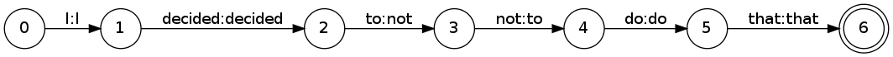
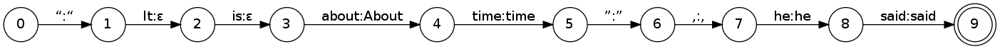
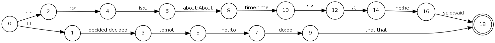
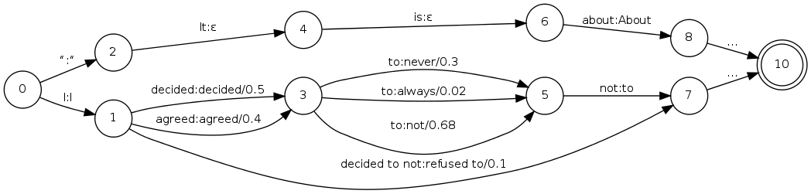

Can
Simple English Wikipedia
editors
teach
us
readability?
For Aizawa Lab
by Hugo Mougard on
May the 16th
Overview
- Goal: learning how to make a text readable
- Idea: unsupervised parallel corpus construction
- Walking the walk (how the corpus was built)
- Corpus metrics
- Learning from the corpus:
- Lexical mappings
- String rewriting
- Tree rewriting
- Conclusion
Making texts readable
Goal is to learn how to make a text readable.
With a weak definition of
readable (due to the approach):
- No consideration of
the reader
- Weak consideration of
the text domain
- Strong emphasis on general syntactic ease
- Also strong emphasis on general lexical ease
Idea
Use Simple English
Wikipedia revision history to build a parallel
corpus of poorly readable
$\mapsto$ readable texts.
Building the corpus
→ Best explained with an example!
Mappings
- ~38k mappings
- ~30k are unique
- ~24k original terms have one
translation only.
Top 10 most translated
| , | 319 |
| and | 191 |
| The | 106 |
| , and | 98 |
| which | 63 |
| , which | 61 |
| of | 60 |
| in | 60 |
| It | 59 |
| to | 57 |
| with | 55 |
Top 3 translations of
“, which”
(in the filtered resource)
A tool to query the corpus
→ Demo time again!
Lexical mappings
Most straightforward way to use the corpus. Possible
variations:
-
Use of the context to decide whether or not the
mapping is applicable:
- Context vectors
- Fixed window to improve grammaticality
- Including POS and parse information
Lexical mappings generalized
We can learn (generalize) in some cases:
-
I decided
to not do that
→ I decided
not to do that
-
“It is about time”,
he said → “About time”, he said
→ We know how to derive every target
word from the source words. We can
generalize (e.g. to POS or parse info).
→ Can be extended to inflections.
More general string rewriting…
We can model string rewriting as transducers:



… and introduce weights

Ranking translations
We can then choose a weight and rank:
| Name |
Set |
⊕ |
⊗ |
0 |
1 |
| Real |
$\{0, +\infty\}$ |
$+$ |
$*$ |
$0$ |
$1$ |
| Log |
$\{-\infty, +\infty\}$ |
$-\log(e^{-x} + e^{-y})$ |
$+$ |
$+\infty$ |
$0$ |
| Tropical |
$\{-\infty, +\infty\}$ |
$\min$ |
$+$ |
$+\infty$ |
$0$ |
| MinMax |
$\{-\infty, +\infty\}$ |
$\min$ |
$\max$ |
$+\infty$ |
$-\infty$ |
| MaxMin |
$\{-\infty, +\infty\}$ |
$\max$ |
$\min$ |
$-\infty$ |
$+\infty$ |
From strings to trees
With parse trees available, we can define tree
transducers, for example as:
- one branch per sentence/transformation (as before)
- recursively pattern matche on the root node and
apply transformation
- the branches split at each level, as the resulting
parse tree.
Conclusion
- Simple English Wikipedia is a promising resource
- There are many ways we can approach rewriting for
readability
- Please get in touch if you have an idea of another
one!
Thank
you
very
much
for
your
attention
☕
Do you have any
question?